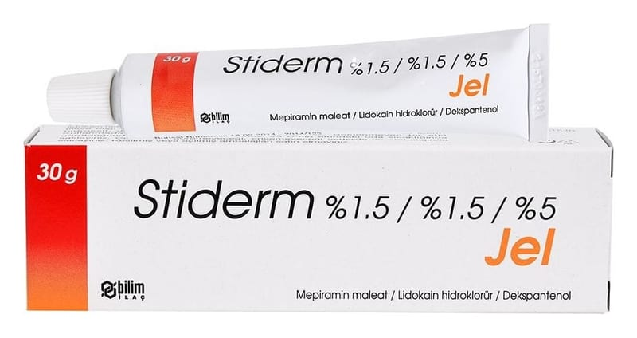

Stiderm %1.5 / %1.5 / %5 Jel ,30 g

Ne için kullanılır
KT · Bölüm 12. STİDERM’i kullanmadan önce dikkat edilmesi gerekenler 3. STİDERM nasıl kullanılır? 4. Olası yan etkiler nelerdir? 5. STİDERM’in saklanması
Başlıkları yer almaktadır.
1.STİDERM nedir ve ne için kullanılır?
STİDERM, 30 gramlık alüminyum tüplerde sunulan bir jeldir.
STİDERM, etkin madde olarak mepiramin maleat, lidokain hidroklorür ve dekspantenol içerir.
STİDERM, şeffaf görünümlü homojen jeldir.
STİDERM deriye uygulandığında, lokal olarak antialerjik (alerjiyi giderici), antiinflamatuvar (iltihabı giderici), antipruritik (kaşıntıyı giderici) ve anestezik etki gösterir.
STİDERM, güneş yanıkları, böcek sokmaları, ürtiker (kurdeşen), kaşıntı ve birinci derece (hafif) yanıklarda kullanılır.